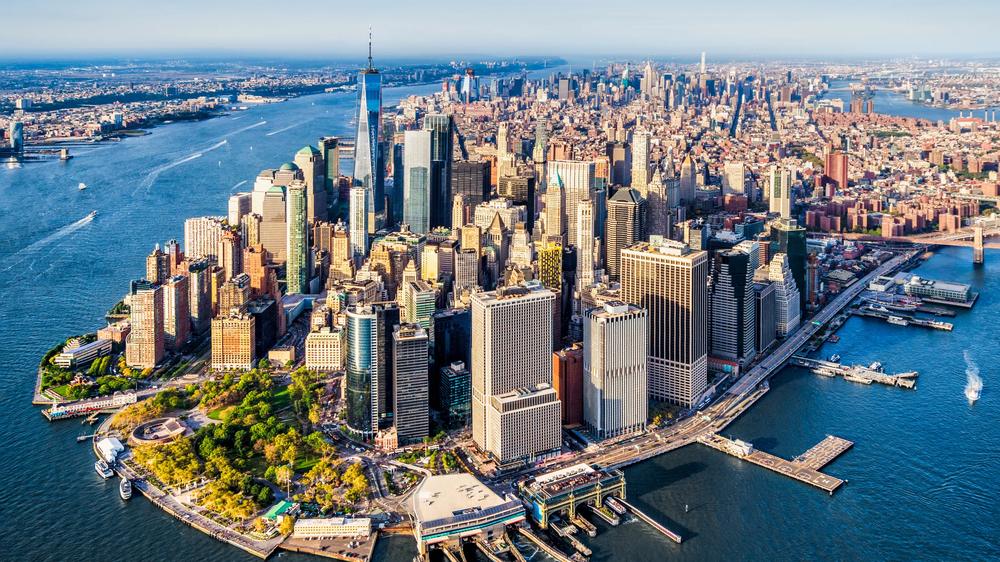
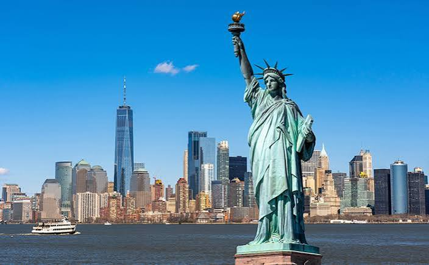
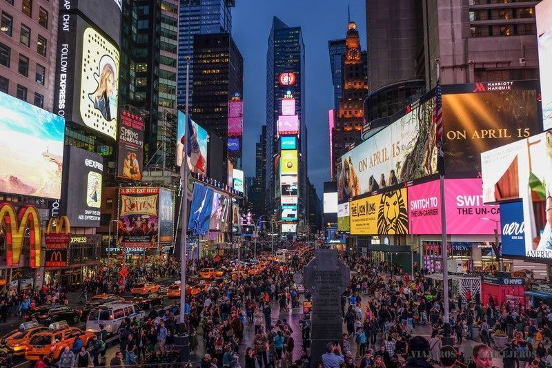
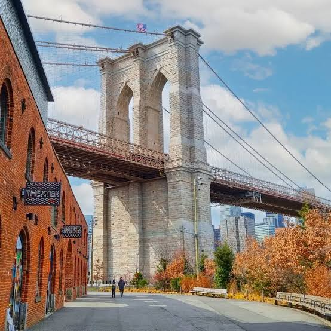
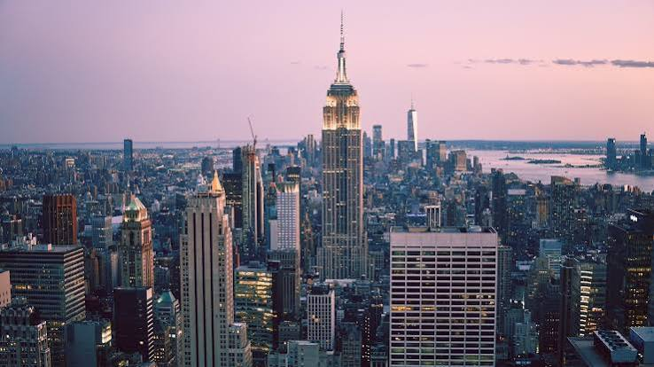

Étoile d’Amérique
Pour vivre, seulement un, pour visiter, beaucoup. Connaître le monde avec nous
Découvrir New YorkInformations générales
"Ça a été une très bonne ville, il y a beaucoup de choses à faire, la nourriture a été excellente, et les parcs et les tours ont été incroyables. Il est une des villes les plus multiculturelles dans le monde et, en général, elle a été une ville très connue." - Gabriel
- Pays
- Etats Unis
- Langue
- Anglais et Espagnol
- Monnaie
- Dollar
- Climat
- Froi en hiver, chaud a ete
- Meilleure saison
- hiver


Histoire et culture
Histoire
Les hollandais ont fondé New York en 1625, George Washington a prêté serment comme premier président américain a Wall Street, dans 1789. En 1886, La France a offert la Statue de la Liberté aux Etats-Units. En 1892, Le centre de transit d'Ellis Island a ouvert les portes au inmigtants. Dans 1929: La bourse de Wall Street s'est effondrée et a déclenché une crise mondiale. En 2001 Des attentats musulmans terroristes ont détruit les tours du World Trade Centre originel.
Culture et traditions
New Yor a celebrations comme. Le Nouvel An, Un boule de cristal tombé au Times Square chaque décembre 31 à minuit. Thanksgiving, Macy's organise un défilé avec ballons gigantesque dans les rues. La Saint Patrick, La communite irlandaise défile sur la Cinquième Avenue avec vêtements verts. L'Indépendance, Macy's lance un grand fue d'artifice à la l'east river. Finalment Halloween, Green village célèbre un parade nocturne colorée. À New York, les habitants aiment beaucoup la musique et la culture. Dans le métro, des musiciens jouant de la guitare ou saxophone. Le soir, les New Yorkais écoutent le jazz à Harlem ou vont voir une musicale à Broadway. Ils visitent depuis des musées comme le Met et il marcher à Central Park. En hiver, ils font du patin à glace au Rockefeller Center et regard le spectacle au Radio City Music Hall. A New York, les artistes connaissent la musique et la ville est toujours jolie. À New York, les habitants ont des coutumes très simples. Le matin, ils prennent un café et ils mangent un bagel dans la rue parce quils marchent très vite. Les New Yorkais parlent beaucoup de langues et célèbrent des fêtes du monde entier. En novembre, les familles préparent pour Thanksgiving et regardent le défilé dans la rue. Le weekend, ils font un piquenique dans le parc ou ils mangent un brunch avec amis.
Gastronomie
⚠ TEXTE : plats typiques et boissons à goûter.
Lieux Touristiques
Des Lieux avec un peu de la Culture New Yorkaise



Le forfait
Ultra Premium
Le Forfait incluit des services et activites premium, pour la meilleur experience et luxury
Prix et services inclus
Inclus
- ⚠ SERVICE INCLUS 1 (vol, hôtel, transferts…)
- ⚠ SERVICE INCLUS 2
- ⚠ SERVICE INCLUS 3
- ⚠ SERVICE INCLUS 4
Non inclus
- ⚠ SERVICE NON INCLUS 1
- ⚠ SERVICE NON INCLUS 2
Itinéraire complet
-
Jour 1 – ⚠ TITRE
⚠ TEXTE : activités, repas, hébergement du jour 1.
-
Jour 2 – ⚠ TITRE
⚠ TEXTE : activités, repas, hébergement du jour 2.
-
Jour 3 – ⚠ TITRE
⚠ TEXTE : activités, repas, hébergement du jour 3.
Contact
Pour vivre, seulement un, pour visiter, beaucoup. Connaître le monde avec nous
- Rue 3 # 52 - 253, #52-253, Cali, Colombia
- (+57) 322 370 5750
- agencecontact@etoiledamerique.com.co